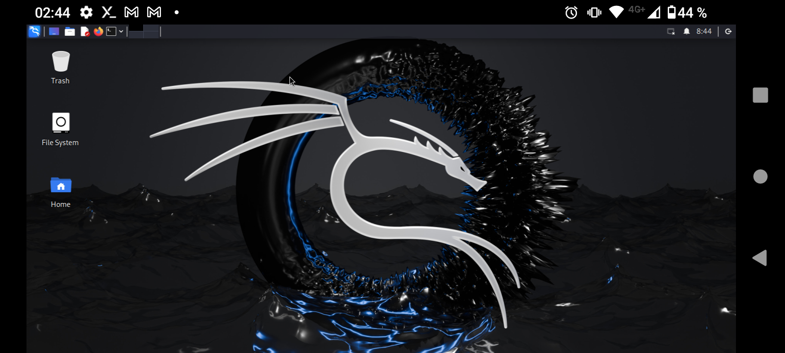
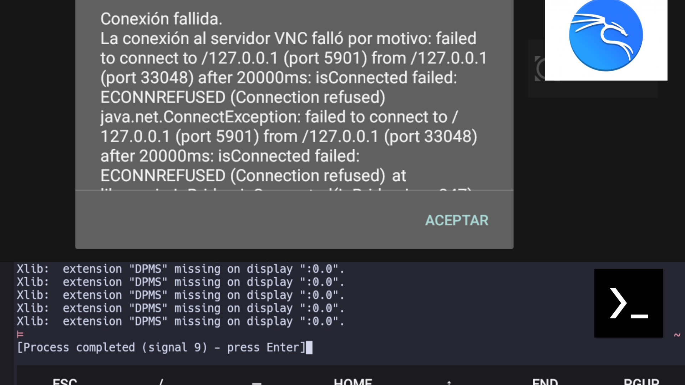
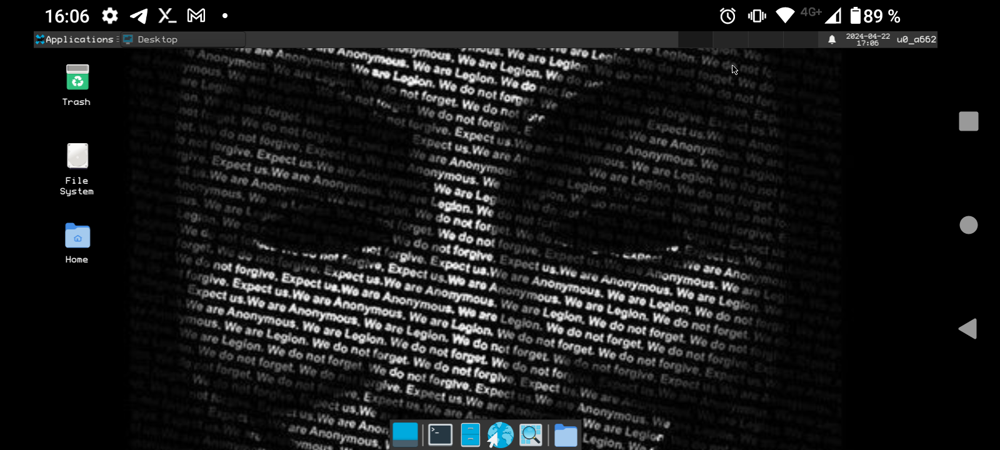

KALI LINUX EN TERMUX

COMO INSTALAR KALILINUX EN TERMUX:X11

COMO RESOLVER EL PROBLEMA DE CONEXION DE LAS MAQUINAS VIRTUALES
COMO SOLUCIONAR EL PROBLEMA DE FIREFOX EN KALI LINUX
COMO SOLUCIONAR EL PROBLEMA DE AUDIO EN KALI LINUX
TERMUX EN ANDROID

COMO PONER GRAFICOS A TERMUX